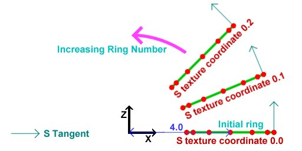

Simple Bumpmapping
Rotating, Diffuse Lit Torus
In the last few weeks I have seen many forum posts from people who want to use bump mapping in their applications. Despite this, there are no "simple" tutorials on how to acheive the effect. This is my attempt at explaining how to implement this technique.
This is the first time I have written a tutorial. Please feel free to tell me what you think.
We will use some OpenGL extensions to acheive this, but they are not vendor specific and will work on any NVidia Geforce series card, any ATI Radeon series card, and some others. If you have not used OpenGL extensions before, I will explain what is necessary to set them up. However, I am aiming this tutorial mainly at people who understand multitexturing and also preferably cube maps.
I will use glut for window management to keep the tutorial as simple as possible.
This is what we will acheive. The left picture shows the bump mapped torus, the right hand picture shows the same torus with standard OpenGL vertex lighting. You can download the demo at the bottom of this page.
The OpenGL Lighting Equation
The red book defines the standard OpenGL lighting equation as:
Vertex Color = emission + globalAmbient + sum(attenuation * spotlight *
[lightAmbient + (max {L.N, 0} * diffuse) + (max {H.N, 0} ^ shininess)*specular])
Where:
| emission | is the material's emissive color |
| globalAmbient | is the ambient color*global ambient brightness |
| attenuation | is a term causing lights to become dimmer with distance |
| spotlight | is a term causing spotlight effects |
| lightAmbient | is the light's ambient color*brightness |
| diffuse | is the light's diffuse color * the material's diffuse color |
| shininess | is the specular exponent, which tells us how shiny a surface is |
| specular | is the light's specular color * the material's specular color |
| L | is the normalised(unit length) vector from the vertex we are lighting to the light |
| N | is the unit length normal to our vertex |
| H | is the normalised "half angle" vector, which points half way between L and the viewer (V) |
Here is a diagram describing these vectors:
Our aim is to evaluate the lighting equation per pixel. Then, by altering the normal, we can achieve a bumpy effect. There is no way we are going to be able to evaluate all of the above, especially without using any fragment programs, register combiners etc. So, we will simplify the equation.
Simplifications:
No ambient light
No emitted light
Only one light source
No attenuation or spotlight effects
No specular
Thus our per pixel lighting equation is simply:
color = max{l.n, 0}*diffuse
Coordinate Spaces
The next thing you will have to figure out in order to understand bump mapping is coordinate spaces. There are many coordinate spaces used in this tutorial. Here is a diagram of them, and the matrices converting one to another:
Here are the five coordinate spaces we will use. I presume you are familiar with the standard OpenGL modelview and projection matrices. From the picture above, you can see that the modelview matrix takes coordinates in object space and converts them to view space, and the projection matrix takes coordinates in view space and converts them to clip space. After clip space, your coordinates undergo "perspective divide" and the viewport transformation and are then in "window coordinates" ready to be drawn on the screen.
When you specify vertices, you do so in object space. Thus the modelview and projection matrices together convert from object space to clip space. If you wanted to convert back from view space to object space, you could transform your vertices by the inverse of the modelview matrix.
So, what's this "Tangent space"? And what's the "TBN matrix"?
OK. This is probably the hardest part to understand. Tangent space is a space local to the surface of our model. Lets consider a single quad:
Now you all know what a normal is, right? It is a vector (in this case normalised) pointing out of the quad. In this image, the normal at each vertex is pointing out of the screen.
Now, we need to find two tangents at the vertex. The "S Tangent" points in the direction of increase of the s texture coordinate. The "T Tangent" points in the direction of increase of the T texture coordinate.
The 2 tangents and the normal form a "basis" at the vertex. They define a coordinate space- "tangent space". Think of the s tangent, t tangent and normal as the x, y and z axes of this space respectively. The TBN matrix is the matrix to convert from object space to tangent space, and it is composed like:
( Sx Sy Sz )
( Tx Ty Tz )
( Nx Ny Nz )
where Sx, Sy and Sz are the components of the S tangent,
Tx, Ty, Tz are the components of the T tangent,
and Nx, Ny, Nz are the components of the normal.
By multiplying a vector in object space by this matrix, you get the vector in tangent space.
By the way, the name TBN matrix comes from "Tangent, Binormal, Normal". The "Binormal" is another name for the t tangent. I believe the name "t tangent" makes more clear what this vector actually represtents.
Normal Maps
So, how do we change the normals on a per pixel basis? Much the same way as you would change the color of a model per pixel, by using a texture map. However, the normal map needs to store normal vectors, not colors.
Our normals look like:
(x)
(y)
(z)
Since they are unit length, (x*x)+(y*y)+(z*z)=1. Thus x, y and z lie between -1 and 1.
We can represent these in a texture map by letting the red, green and blue components of the texture equal x, y and z respectively.
The color components which we will use to represent the vector must lie between 0 and 1. So, we put:
r = (x+1)/2;
g = (y+1)/2;
b = (z+1)/2;
Take a minute to convince yourselves that every possible unit normal can be stored in a color this way.
The normals we enclose in the texture map will be in tangent space. In tangent space, the usual normal points in the z direction. Hence the RGB color for the straight up normal is (0.5, 0.5, 1.0). This is why normal maps are a blueish color.
Here is the normal map we will be using for our example.
Cube Maps
Recall that a 2d texture is a flat quad, a 2d array of colors. Imagine six square 2d textures, and put these together as the faces of a cube. This is a cube map. To access texture colors in a cube map, we use 3-component texture coordinates, ie glTexCoord3f rather than glTexCoord2f, or in our example, the corresponding vertex array structure.
Imagine centering the cube around the origin. Given a 3d texture coordinate, we can draw a line from the origin to our coordinate. The texture color at the point where this line(extended if necessary) meets the cube is the color used for texture mapping. Easy eh?
This means that the vector (2, 1, 2) and (8, 4, 8) and in fact (2k, k, 2k) for any k all return the same result.
Here is an example. If we pass the coordinates of the green X into glTexCoord3f, OpenGL will use the red texture color, which can be calculated by drawing the green line and seeing where it intersects the cube.
Normalisation Cube Map
In this demo we will use a normalisation cube map. This means that simply, instead of storing colors in our cube map we will store vectors, just as for the normal map. In the texel indexed by (ka, kb, kc), we will store the vector
normalize(a, b, c)
Thus any vector passed into our cube map will cause the return of the normalised version of that vector. We will use this to ensure the light vector is normalized at every pixel.
As a reminder, here is our target:
color = max{l.n, 0}*diffuse
We know our light's position in world space. We will use the inverse model matrix (see diagram above) to convert this to object space. Then, we will calculate the vector from the vertex we are considering to the light. Then, we can use the TBN matrix to convert our light's position into tangent space, and save this into our vertex structure. We will then draw our torus. The light vector will be normalised by the normalisation cube map. Since the normals in our normal map and the light vector are declared in tangent space, the dot product between them will make sense. Then, we simply multiply the result of this by the diffuse material color.
In order to achieve this, we will use the Architecture Review Board approved OpenGL extensions:
ARB_multitexture
ARB_texture_cube_map
ARB_texture_env_combine
ARB_texture_env_dot3
Understand all that? If not, don't worry. Try reading it again, and try reading the notes in the code below. If all else fails and you still can't get your head around it, contact me.
OK, on with the code...
Setting Up Extensions:
One of the greatest strengths of OpenGL is its ability to be extended. Extensions can be written by hardware vendors to take advantage of hardware features. The extensions we are using here are all "ARB" extensions, which means that they are approved by the OpenGL Architecture Review Board, the people who govern the OpenGL specification. These extensions are all "core" features of the latest version of OpenGL, version1.4. However Microsoft have decided not to ship libraries for any version of OpenGL beyond 1.1 for Windows. OpenGL 1.4 versions can be downloaded, but we will instead access the functions we require using extensions to OpenGL 1.1.
The tutorial comes with a .cpp file for each extension we are going to use. Here is the file for ARB_multitexture.
First, a boolean variable to hold whether or not the extension is supported:
bool ARB_multitexture_supported=false;
This function tests whether ARB_multitexture is supported, and if so, initialises it. The names of all extensions supported by your particular implementation of OpenGL are stored in the extensions string. We parse this string trying to find "GL_ARB_multitexture".
bool SetUpARB_multitexture()
{
Get the extensions string, and look through it for "GL_ARB_multitexture". If it is found, set "ARB_multitexture_supported" to true.
char * extensionString=(char *)glGetString(GL_EXTENSIONS);
char * extensionName="GL_ARB_multitexture";
char * endOfString; //store pointer to end of string
unsigned int distanceToSpace; //distance to next space
endOfString=extensionString+strlen(extensionString);
//loop through string
while(extensionString<endOfString)
{
//find distance to next space
distanceToSpace=strcspn(extensionString, " ");
//see if we have found extensionName
if((strlen(extensionName)==distanceToSpace) &&
(strncmp(extensionName, extensionString, distanceToSpace)==0))
{
ARB_multitexture_supported=true;
}
//if not, move on
extensionString+=distanceToSpace+1;
}
If we did not find "GL_ARB_multitexture", output an error message and return false.
if(!ARB_multitexture_supported)
{
printf("ARB_multitexture unsupported!\n");
return false;
}
printf("ARB_multitexture supported!\n");
If we reached here, ARB_multitexture is supported. In order to use the ARB_multitexture functions, we need to create function pointers for each function. We then use wglGetProcAddress to initialise the function pointers:
PFNGLACTIVETEXTUREARBPROC glActiveTextureARB =NULL;
glActiveTextureARB = (PFNGLACTIVETEXTUREARBPROC)
wglGetProcAddress("glActiveTextureARB");
The function pointers are declared globally, and are declared "extern" in header files. By including the correct header file, and calling "SetUpARB_multitexture" at the start of our program, we can now use the functions.
The other three extensions are set up in the same way, but they are simpler because no function pointers are needed.
Creating The Normalisation Cube Map
The function "GenerateNormalisationCubeMap" does exactly what it says on the tin.
bool GenerateNormalisationCubeMap()
{
First we create space to hold the data for a single face. Each face is 32x32, and we need to store the R, G and B components of the color at each point.
unsigned char * data=new unsigned char[32*32*3];
if(!data)
{
printf("Unable to allocate memory for texture data for cube map\n");
return false;
}
Declare some useful variables.
//some useful variables
int size=32;
float offset=0.5f;
float halfSize=16.0f;
VECTOR3D tempVector;
unsigned char * bytePtr;
We will do this next part once for each face. I will show how it is done for the positive x face. The other faces are very similar. Look in the source for details.
//positive x
bytePtr=data;
Loop through the pixels in the face.
for(int j=0; j<size; j++)
{
for(int i=0; i<size; i++)
{
Calculate the vector from the centre of the cube to this texel.
tempVector.SetX(halfSize);
tempVector.SetY(-(j+offset-halfSize));
tempVector.SetZ(-(i+offset-halfSize));
We normalize this vector, pack it to [0, 1] so it can be stored in a color, and save this into the texture data.
tempVector.Normalize();
tempVector.PackTo01();
bytePtr[0]=(unsigned char)(tempVector.GetX()*255);
bytePtr[1]=(unsigned char)(tempVector.GetY()*255);
bytePtr[2]=(unsigned char)(tempVector.GetZ()*255);
bytePtr+=3;
}
}
Now we upload this face of the cube to OpenGL. We tell it that this is the positive x face of the current cube map, and where to find the data.
glTexImage2D(GL_TEXTURE_CUBE_MAP_POSITIVE_X_ARB, 0, GL_RGBA8,
32, 32, 0, GL_RGB, GL_UNSIGNED_BYTE, data);
After repeating this for each face of the cube, we are done. Don't forget to delete the temporary data storage.
delete [] data;
return true;
}
Creating the torus:
We will store our torus information in a class. First we have a simple class to store the data for one vertex. We store the position and the texture coordinates, followed by the tangents and normal. Finally, we store the tangent space light vector for each vertex. This is the vector from the vertex to the light, in tangent space.
class TORUS_VERTEX
{
public:
VECTOR3D position;
float s, t;
VECTOR3D sTangent, tTangent;
VECTOR3D normal;
VECTOR3D tangentSpaceLight;
};
Now we have the main torus class. This simply stores a list of vertices and a list of indices, and the sizes of these lists. It also contains a function to fill these lists, InitTorus.
class TORUS
{
public:
TORUS();
~TORUS();
bool InitTorus();
int numVertices;
int numIndices;
unsigned int * indices;
TORUS_VERTEX * vertices;
};
We define our torus to have a precision of 48. This means that there are 48 vertices per ring when we construct it.
const int torusPrecision=48;
The constructor for the torus calls the Init function.
TORUS::TORUS()
{
InitTorus();
}
The torus destructor deletes the index and vertex lists to free up the memory.
TORUS::~TORUS()
{
if(indices)
delete [] indices;
indices=NULL;
if(vertices)
delete [] vertices;
vertices=NULL;
}
This is our torus initiation function.
bool TORUS::InitTorus()
{
We calculate the number of vertices and the nuber of indices. Then create space for the vertex and index lists.
numVertices=(torusPrecision+1)*(torusPrecision+1);
numIndices=2*torusPrecision*torusPrecision*3;
vertices=new TORUS_VERTEX[numVertices];
if(!vertices)
{
printf("Unable to allocate memory for torus vertices\n");
return false;
}
indices=new unsigned int[numIndices];
if(!indices)
{
printf("Unable to allocate memory for torus indices\n");
return false;
}
Now we calculate the torus vertex positions, normals etc.
First we generate a ring of 48 vertices in the XY plane, off to the right of the origin:
The normals for these vertices are as shown. We also set the T texture coordinate to increse linearly with i, and the S texture coordinate to be 0. Thus, the T tangent points in the direction of increasing i. The S tangent points into the screen for a reason we will see in a minute.
//calculate the first ring - inner radius 4, outer radius 1.5
for(int i=0; i<torusPrecision+1; i++)
{
vertices[i].position=VECTOR3D(1.5f, 0.0f, 0.0f).GetRotatedZ(
i*360.0f/torusPrecision)+VECTOR3D(4.0f, 0.0f, 0.0f);
vertices[i].s=0.0f;
vertices[i].t=(float)i/torusPrecision;
vertices[i].sTangent.Set(0.0f, 0.0f, -1.0f);
vertices[i].tTangent=VECTOR3D(0.0f, -1.0f, 0.0f).GetRotatedZ(i*360.0f/torusPrecision);
vertices[i].normal=vertices[i].tTangent.CrossProduct(vertices[i].sTangent);
}
Next, we rotate this entire ring around the Y axis in steps of 2*PI/48 rads. This will generate the other rings to form the torus out of. All normals, tangents etc get rotated, and the T texture coordinates remain the same as in the original ring. The S texture coordinates increase from one ring to the next. This is why the S tangent of the first ring points into the screen. This picture is an aerial view of the picture above.

//rotate the first ring to get the other rings
for(int ring=1; ring<torusPrecision+1; ring++)
{
for(i=0; i<torusPrecision+1; i++)
{
vertices[ring*(torusPrecision+1)+i].position=
vertices[i].position.GetRotatedY(ring*360.0f/torusPrecision);
vertices[ring*(torusPrecision+1)+i].s=2.0f*ring/torusPrecision;
vertices[ring*(torusPrecision+1)+i].t=vertices[i].t;
vertices[ring*(torusPrecision+1)+i].sTangent=
vertices[i].sTangent.GetRotatedY(ring*360.0f/torusPrecision);
vertices[ring*(torusPrecision+1)+i].tTangent=
vertices[i].tTangent.GetRotatedY(ring*360.0f/torusPrecision);
vertices[ring*(torusPrecision+1)+i].normal=
vertices[i].normal.GetRotatedY(ring*360.0f/torusPrecision);
}
}
Now we calculate the indices to construct triangles out of the vertices that we just placed.
//calculate the indices
for(ring=0; ring<torusPrecision; ring++)
{
for(i=0; i<torusPrecision; i++)
{
indices[((ring*torusPrecision+i)*2)*3+0]=ring*(torusPrecision+1)+i;
indices[((ring*torusPrecision+i)*2)*3+1]=(ring+1)*(torusPrecision+1)+i;
indices[((ring*torusPrecision+i)*2)*3+2]=ring*(torusPrecision+1)+i+1;
indices[((ring*torusPrecision+i)*2+1)*3+0]=ring*(torusPrecision+1)+i+1;
indices[((ring*torusPrecision+i)*2+1)*3+1]=(ring+1)*(torusPrecision+1)+i;
indices[((ring*torusPrecision+i)*2+1)*3+2]=(ring+1)*(torusPrecision+1)+i+1;
}
}
OK, that's the torus done!
return true;
}
Finally, on to the main file:
First we include the necessary header files.
"WIN32_LEAN_AND_MEAN" simply tells windows.h not to include lots of obscure stuff which we will not be using.
We then include "glut.h", which will itself include "gl.h" and "glu.h".
"glext.h" contains the tokens required for the extensions we will be using.
Then, we include the headers we made for the extensions.
"IMAGE.h" is an image class for loading in our normal map and texture map.
"Maths.h" contains the vector and matrix classes we will be using.
"TORUS.h" contains the details of the torus we will draw, and "Normalisation cube map.h" contains...well, I'll leave that to you to figure out.
#define WIN32_LEAN_AND_MEAN
#include <windows.h>
#include <stdio.h>
#include <GL/glut.h>
#include <GL/glext.h>
#include "Extensions/ARB_multitexture_extension.h"
#include "Extensions/ARB_texture_cube_map_extension.h"
#include "Extensions/ARB_texture_env_combine_extension.h"
#include "Extensions/ARB_texture_env_dot3_extension.h"
#include "Image/IMAGE.h"
#include "Maths/Maths.h"
#include "TORUS.h"
#include "Normalisation Cube Map.h"
We will now declare some global objects, including booleans for whether or not to draw the bump map and color texture.
//Our torus
TORUS torus;
//Normal map
GLuint normalMap;
//Decal texture
GLuint decalTexture;
//Normalisation cube map
GLuint normalisationCubeMap;
//Light position in world space
VECTOR3D worldLightPosition=VECTOR3D(10.0f, 10.0f, 10.0f);
bool drawBumps=true;
bool drawColor=true;
Now, we create a function called "Init". This is called once at the beginning of our program, but AFTER our window has been created.
//Called for initiation
void Init(void)
{
First, we set up the extensions we will be using. If an extension setup returns false, the extension is not supported. So, we cannot run the demo. Output an error message and quit.
//Check for and set up extensions
if( !SetUpARB_multitexture() || !SetUpARB_texture_cube_map() ||
!SetUpARB_texture_env_combine() || !SetUpARB_texture_env_dot3())
{
printf("Required Extension Unsupported\n");
exit(0);
}
Now we set OpenGL states. This bit of code is probably familiar to anyone who has seen NeHe's tutorials. We load the identity modelview matrix, set up our color and depth states, then enable backface culling.
//Load identity modelview
glMatrixMode(GL_MODELVIEW);
glLoadIdentity();
//Shading states
glShadeModel(GL_SMOOTH);
glClearColor(0.2f, 0.4f, 0.2f, 0.0f);
glColor4f(1.0f, 1.0f, 1.0f, 1.0f);
glHint(GL_PERSPECTIVE_CORRECTION_HINT, GL_NICEST);
//Depth states
glClearDepth(1.0f);
glDepthFunc(GL_LEQUAL);
glEnable(GL_DEPTH_TEST);
glEnable(GL_CULL_FACE);
Now, we load in our textures. First we use the IMAGE class to load in the decal(color) map. Then, since our texture map is paletted (8 bits per pixel), we expand it to be 24bpp before sending to OpenGL. We use glTexImage2D to send the data, then set the texture's parameters. We do exactly the same for the normal map.
//Load decal texture
IMAGE decalImage;
decalImage.Load("decal.bmp");
decalImage.ExpandPalette();
//Convert normal map to texture
glGenTextures(1, &decalTexture);
glBindTexture(GL_TEXTURE_2D, decalTexture);
glTexImage2D( GL_TEXTURE_2D, 0, GL_RGBA8, decalImage.width, decalImage.height,
0, decalImage.format, GL_UNSIGNED_BYTE, decalImage.data);
glTexParameteri(GL_TEXTURE_2D, GL_TEXTURE_MAG_FILTER, GL_LINEAR);
glTexParameteri(GL_TEXTURE_2D, GL_TEXTURE_MIN_FILTER, GL_LINEAR);
glTexParameteri(GL_TEXTURE_2D, GL_TEXTURE_WRAP_S, GL_REPEAT);
glTexParameteri(GL_TEXTURE_2D, GL_TEXTURE_WRAP_T, GL_REPEAT);
//Load normal map
IMAGE normalMapImage;
normalMapImage.Load("Normal map.bmp");
normalMapImage.ExpandPalette();
//Convert normal map to texture
glGenTextures(1, &normalMap);
glBindTexture(GL_TEXTURE_2D, normalMap);
glTexImage2D( GL_TEXTURE_2D, 0, GL_RGBA8, normalMapImage.width, normalMapImage.height,
0, normalMapImage.format, GL_UNSIGNED_BYTE, normalMapImage.data);
glTexParameteri(GL_TEXTURE_2D, GL_TEXTURE_MAG_FILTER, GL_LINEAR);
glTexParameteri(GL_TEXTURE_2D, GL_TEXTURE_MIN_FILTER, GL_LINEAR);
glTexParameteri(GL_TEXTURE_2D, GL_TEXTURE_WRAP_S, GL_REPEAT);
glTexParameteri(GL_TEXTURE_2D, GL_TEXTURE_WRAP_T, GL_REPEAT);
Now, we create our normalisation cube map. We create a texture just as before, but instead of using "GL_TEXTURE_2D", we use "GL_TEXTURE_CUBE_MAP_ARB". The "ARB" on the end signifies this token is part of an ARB extension. Instead of using the LoadTexture routine however, we generate the data for the cube map and send it to OpenGL in the "GenerateNormalisationCubeMap" function discussed above.
//Create normalisation cube map
glGenTextures(1, &normalisationCubeMap);
glBindTexture(GL_TEXTURE_CUBE_MAP_ARB, normalisationCubeMap);
GenerateNormalisationCubeMap();
glTexParameteri(GL_TEXTURE_CUBE_MAP_ARB, GL_TEXTURE_MAG_FILTER, GL_LINEAR);
glTexParameteri(GL_TEXTURE_CUBE_MAP_ARB, GL_TEXTURE_MIN_FILTER, GL_LINEAR);
glTexParameteri(GL_TEXTURE_CUBE_MAP_ARB, GL_TEXTURE_WRAP_S, GL_CLAMP_TO_EDGE);
glTexParameteri(GL_TEXTURE_CUBE_MAP_ARB, GL_TEXTURE_WRAP_T, GL_CLAMP_TO_EDGE);
glTexParameteri(GL_TEXTURE_CUBE_MAP_ARB, GL_TEXTURE_WRAP_R, GL_CLAMP_TO_EDGE);
}
OK, that's it for initiation. Now it's time to draw something!
//Called to draw scene
void Display(void)
{
First, clear the color and depth buffers, and reset the modelview matrix to identity.
glClear(GL_COLOR_BUFFER_BIT | GL_DEPTH_BUFFER_BIT);
glLoadIdentity();
Now set up the modelview matrix.
First we apply the viewing transformation, the "view matrix" in the diagram above.
This basically places our camera in the scene.
We use gluLookAt to place the camera at (0.0, 10.0, 10.0), looking at the origin.
Next, we set up the model matrix.
Remember the modelview matrix is simply the model matrix followed by the view matrix.
However, OpenGL requires that we specify the transformations in the reverse order to that in which they occur.
We want to rotate the torus around the Y axis.
We have a static variable to keep our rotation, and we simply increase this value, and then send the rotation to OpenGL.
//use gluLookAt to look at torus
gluLookAt(0.0f,10.0f,10.0f,
0.0f, 0.0f, 0.0f,
0.0f, 1.0f, 0.0f);
//rotate torus
static float angle=0.0f;
angle+=0.1f;
glRotatef(angle, 0.0f, 1.0f, 0.0f);
We now calculate the inverse model matrix.
As you will know, this converts from world space to object space.
First we save the current modelview matrix.
Then we reset it to identity.
The inverse of a rotation by an angle a is the rotation around the same axis by -a.
We send this rotation to OpenGL, and use GetFloatv to get the matrix.
Then we restore the modelview matrix which we saved.
//Get the inverse model matrix
MATRIX4X4 inverseModelMatrix;
glPushMatrix();
glLoadIdentity();
glRotatef(-angle, 0.0f, 1.0f, 0.0f);
glGetFloatv(GL_MODELVIEW_MATRIX, inverseModelMatrix);
glPopMatrix();
Now, we use the matrix we just calculated to convert the light's position into object space.
//Get the object space light vector
VECTOR3D objectLightPosition=inverseModelMatrix*worldLightPosition;
Now, we need to calculate the tangent space light vector for each vertex.
We loop through all of the vertices, and fill in the vector.
Looking at the above diagram (again), we see that the TSB matrix takes points in object space and converts them to tangent space.
We know our light position in object space.
We subtract from this the vertex position to get the vector from the vertex to the light.
We can use the TSB matrix to convert this to tangent space. The TSB matrix has the form:
( Sx Sy Sz )
( Tx Ty Tz )
( Nx Ny Nz )
So, the first component of the tangent space light vector is given by (Sx, Sy, Sz).
(Lx, Ly, Lz) where L is the vector from the vertex to the light.
Similarly, the other two components are given by simple dot products.
//Loop through vertices
for(int i=0; i<torus.numVertices; ++i)
{
VECTOR3D lightVector=objectLightPosition-torus.vertices[i].position;
//Calculate tangent space light vector
torus.vertices[i].tangentSpaceLight.x=
torus.vertices[i].sTangent.DotProduct(lightVector);
torus.vertices[i].tangentSpaceLight.y=
torus.vertices[i].tTangent.DotProduct(lightVector);
torus.vertices[i].tangentSpaceLight.z=
torus.vertices[i].normal.DotProduct(lightVector);
}
Now we can draw the torus. We draw the bump mapped torus in two passes. First we draw the bumps, then we multiply by the color texture. We can turn these passes on and off for different effects. First, draw the bump pass if necessary.
//Draw bump pass
if(drawBumps)
{
First, we bind the textures we will use. We bind the normal map to unit 0, and enable 2D texturing. We then bind the normalisation cube map to texture unit 1, and enable cube-map texturing. Then we reset the current texture unit to unit 0.
//Bind normal map to texture unit 0
glBindTexture(GL_TEXTURE_2D, normalMap);
glEnable(GL_TEXTURE_2D);
//Bind normalisation cube map to texture unit 1
glActiveTextureARB(GL_TEXTURE1_ARB);
glBindTexture(GL_TEXTURE_CUBE_MAP_ARB, normalisationCubeMap);
glEnable(GL_TEXTURE_CUBE_MAP_ARB);
glActiveTextureARB(GL_TEXTURE0_ARB);
Now we set up the vertex arrays we will use.
We set up the vertex pointer to point to the positions, and enable the vertex array.
The texture coordinate arrays are set up for each texture unit.
The texture coordinate set for unit 0 is simply the s and t texture coordinates.
Thus, the normal map will be applied to the torus just like a standard texture map.
The texture coordinate set for unit 1 is simply the tangent space light vector.
As we have set texture 1 to be the normalisation cube map, texture 1 will contain the normalised tangent space light vector for each pixel.
//Set vertex arrays for torus
glVertexPointer(3, GL_FLOAT, sizeof(TORUS_VERTEX), &torus.vertices[0].position);
glEnableClientState(GL_VERTEX_ARRAY);
//Send texture coords for normal map to unit 0
glTexCoordPointer(2, GL_FLOAT, sizeof(TORUS_VERTEX), &torus.vertices[0].s);
glEnableClientState(GL_TEXTURE_COORD_ARRAY);
//Send tangent space light vectors for normalisation to unit 1
glClientActiveTextureARB(GL_TEXTURE1_ARB);
glTexCoordPointer(3, GL_FLOAT, sizeof(TORUS_VERTEX), &torus.vertices[0].tangentSpaceLight);
glEnableClientState(GL_TEXTURE_COORD_ARRAY);
glClientActiveTextureARB(GL_TEXTURE0_ARB);
We have the normal in texture 0, and the normalised tangent space light vector in unit 1. Remember our aim is to evaluate:
color = max{l.n, 0}*diffuse
We will multiply by diffuse in the second pass, so we need to evaluate tex0 dot tex1.
So, we will use the ARB_texture_env_combine and ARB_texture_env_dot3 extensions to achieve this.
The first texture unit will replace the fragment color with the texture color, i.e. the normal map.
The second texture unit will dot this with texture 1, i.e. the light vector.
Since both are in tangent space, the dot product makes sense.
Also, as this is output as a color, it will be clamped to [0,1].
So, we are set up to evaluate the first term of our equation.
You can see what this term looks like on its own by pressing '2' in the demo.
//Set up texture environment to do (tex0 dot tex1)*color
glTexEnvi(GL_TEXTURE_ENV, GL_TEXTURE_ENV_MODE, GL_COMBINE_ARB);
glTexEnvi(GL_TEXTURE_ENV, GL_SOURCE0_RGB_ARB, GL_TEXTURE);
glTexEnvi(GL_TEXTURE_ENV, GL_COMBINE_RGB_ARB, GL_REPLACE);
glActiveTextureARB(GL_TEXTURE1_ARB);
glTexEnvi(GL_TEXTURE_ENV, GL_TEXTURE_ENV_MODE, GL_COMBINE_ARB);
glTexEnvi(GL_TEXTURE_ENV, GL_SOURCE0_RGB_ARB, GL_TEXTURE);
glTexEnvi(GL_TEXTURE_ENV, GL_COMBINE_RGB_ARB, GL_DOT3_RGB_ARB);
glTexEnvi(GL_TEXTURE_ENV, GL_SOURCE1_RGB_ARB, GL_PREVIOUS_ARB);
glActiveTextureARB(GL_TEXTURE0_ARB);
If you have been paying attention, you may be wondering about the fact that the vectors were packed into [0, 1] in the textures, and we did nothing about expanding them back to [-1, 1]. Don't worry, the "DOT3_RGB_ARB" texture environment will do this for us automatically.
Now, we can draw the torus.
//Draw torus
glDrawElements(GL_TRIANGLES, torus.numIndices, GL_UNSIGNED_INT, torus.indices);
We have drawn what we need to with this setup, so we can disable the textures and the vertex arrays. We also reset the texture environment to the standard "modulate".
//Disable textures
glDisable(GL_TEXTURE_2D);
glActiveTextureARB(GL_TEXTURE1_ARB);
glDisable(GL_TEXTURE_CUBE_MAP_ARB);
glActiveTextureARB(GL_TEXTURE0_ARB);
//disable vertex arrays
glDisableClientState(GL_VERTEX_ARRAY);
glDisableClientState(GL_TEXTURE_COORD_ARRAY);
glClientActiveTextureARB(GL_TEXTURE1_ARB);
glDisableClientState(GL_TEXTURE_COORD_ARRAY);
glClientActiveTextureARB(GL_TEXTURE0_ARB);
//Return to standard modulate texenv
glTexEnvi(GL_TEXTURE_ENV, GL_TEXTURE_ENV_MODE, GL_MODULATE);
}
The next step is to draw the diffuse color, our textured torus. If we are drawing both the bump map pass and the textured pass, we combine them by multiplication. So, we enable multiplicative blending.
//If we are drawing both passes, enable blending to multiply them together
if(drawBumps && drawColor)
{
//Enable multiplicative blending
glBlendFunc(GL_DST_COLOR, GL_ZERO);
glEnable(GL_BLEND);
}
Now we can draw the textured pass.
//Perform a second pass to color the torus
if(drawColor)
{
If we are not drawing the bump mapped pass, we will enable a standard OpenGL light to enable us to compare the non-bumpmapped torus to the bumpmapped one. You can see the standard lit torus by pressing '3' in the demo.
if(!drawBumps)
{
glLightfv(GL_LIGHT1, GL_POSITION, VECTOR4D(objectLightPosition));
glLightfv(GL_LIGHT1, GL_DIFFUSE, white);
glLightfv(GL_LIGHT1, GL_AMBIENT, black);
glLightModelfv(GL_LIGHT_MODEL_AMBIENT, black);
glEnable(GL_LIGHT1);
glEnable(GL_LIGHTING);
glMaterialfv(GL_FRONT, GL_DIFFUSE, white);
}
We bind our decal (color) texture to texture unit 0, and enable 2d texturing.
//Bind decal texture
glBindTexture(GL_TEXTURE_2D, decalTexture);
glEnable(GL_TEXTURE_2D);
Now we enable the vertex array and texture coordinate array as above. This time, we also enable a normal array, for the standard OpenGL lighting.
//Set vertex arrays for torus
glVertexPointer(3, GL_FLOAT, sizeof(TORUS_VERTEX), &torus.vertices[0].position);
glEnableClientState(GL_VERTEX_ARRAY);
glNormalPointer(GL_FLOAT, sizeof(TORUS_VERTEX), &torus.vertices[0].normal);
glEnableClientState(GL_NORMAL_ARRAY);
glTexCoordPointer(2, GL_FLOAT, sizeof(TORUS_VERTEX), &torus.vertices[0].s);
glEnableClientState(GL_TEXTURE_COORD_ARRAY);
Now we draw the torus and reset the OpenGL states (lighting, texturing etc).
//Draw torus
glDrawElements(GL_TRIANGLES, torus.numIndices, GL_UNSIGNED_INT, torus.indices);
if(!drawBumps)
glDisable(GL_LIGHTING);
//Disable texture
glDisable(GL_TEXTURE_2D);
//disable vertex arrays
glDisableClientState(GL_VERTEX_ARRAY);
glDisableClientState(GL_NORMAL_ARRAY);
glDisableClientState(GL_TEXTURE_COORD_ARRAY);
}
//Disable blending if it is enabled
if(drawBumps && drawColor)
glDisable(GL_BLEND);
glFinish tells OpenGL to complete any drawing.
glutSwapBuffers swaps the front and back color buffers.
glutPostRedisplay tells glut we want it to draw the next frame as soon as possible.
glFinish();
glutSwapBuffers();
glutPostRedisplay();
}
That's all the drawing!
Now we need to create a few more functions for glut. These should be familiar to you if you have used glut before.
Reshape() is called when the window resizes. It resets the viewport to be the whole screen and also resets the projection matrix to the correct aspect ratio.
//Called on window resize
void Reshape(int w, int h)
{
//Set viewport
if(h==0)
h=1;
glViewport(0, 0, w, h);
//Set up projection matrix
glMatrixMode(GL_PROJECTION);
glLoadIdentity();
gluPerspective( 45.0f, (GLfloat)w/(GLfloat)h, 1.0f, 100.0f);
glMatrixMode(GL_MODELVIEW);
}
Keyboard() is called when a key is pressed.
//Called when a key is pressed
void Keyboard(unsigned char key, int x, int y)
{
If the user has pressed escape, we exit.
//If escape is pressed, exit
if(key==27)
exit(0);
If '1' is pressed, we want to draw both the bump map pass and the color pass. So, set the two booleans to true.
//'1' draws both passes
if(key=='1')
{
drawBumps=true;
drawColor=true;
}
If '2' is pressed, we only want to draw the bump pass, so set that to true, and the other pass to false.
//'2' draws only bumps
if(key=='2')
{
drawBumps=true;
drawColor=false;
}
If you press 3, we only want to draw the color pass. So, disable the bump pass.
//'3' draws only color
if(key=='3')
{
drawBumps=false;
drawColor=true;
}
If 'W' is pressed, we set the current drawing mode to wireframe.
If 'F' is pressed, we set the mode to filled polygons.
//'W' draws in wireframe
if(key=='W' || key=='w')
glPolygonMode(GL_FRONT, GL_LINE);
//'F' return to fill
if(key=='F' || key=='f')
glPolygonMode(GL_FRONT, GL_FILL);
}
Finally, our main function. This is a pretty standard glut affair. We Initiate glut, and create a window with a double buffer, RGB mode(as opposed to color index mode) anda depth buffer. Then, we call our Init function from above. We then tell glut where to find the display, reshape and keyboard functions. This is called "registering callbacks". Then, we tell glut to begin drawing. Glut will handle our program from here.
int main(int argc, char** argv)
{
glutInit(&argc, argv);
glutInitDisplayMode(GLUT_DOUBLE | GLUT_RGB | GLUT_DEPTH);
glutInitWindowSize(640, 480);
glutCreateWindow("Simple Bumpmapping");
Init();
glutDisplayFunc(Display);
glutReshapeFunc(Reshape);
glutKeyboardFunc(Keyboard);
glutMainLoop();
return 0;
}
That's it! I hope you understood most of that and look forward to seeing what you can do with it!
Addendum:
I have received several requests for code to calculate the tangent space basis for a general polygon.
I recommend you use the code found at
http://www.terathon.com/code/tangent.php
Download:
You can download the exe and source here:
simplebump.zip (132 KB)
References:
Per-Pixel Lighting, by Philip Taylor. http://msdn.microsoft.com
OpenGL Extension Registry. http://oss.sgi.com/projects/ogl-sample/registry/